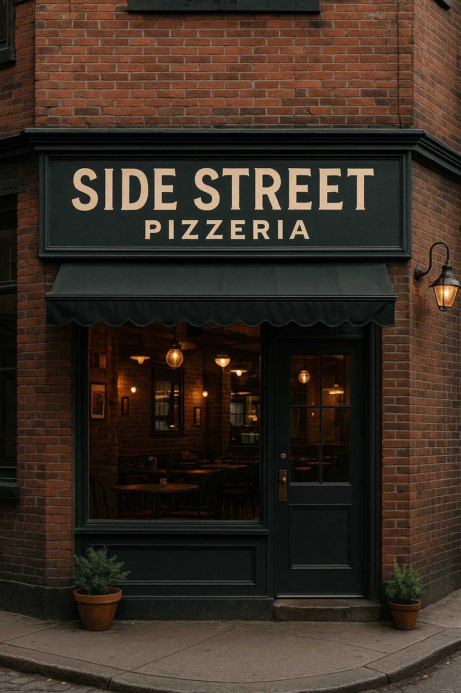

Receta de familia
La misma base que nos vio nacer, perfeccionada con los años.
Side Street nació como un pequeño sueño en una calle olvidada del centro. Inspirados por la pasión por la pizza artesanal y el calor de los buenos momentos, comenzamos con una receta de familia y mucho corazón.
Lo que empezó como un local discreto, hoy es un lugar de encuentro para los amantes de la buena pizza.

La misma base que nos vio nacer, perfeccionada con los años.
Cada pizza se arma y se hornea cuando la pedís, nunca antes.
Un lugar sencillo, cercano y con las puertas siempre abiertas.
Detrás de cada pizza está nuestro chef fundador, Marco Rossi, un apasionado por la cocina italiana y por compartir sabores auténticos. Junto a un equipo comprometido, creamos cada receta con dedicación y frescura.
Los mejores momentos ocurren en los lugares más inesperados.
El nombre "Side Street" representa nuestras raíces humildes: una calle lateral donde todo comenzó. Allí aprendimos esa lección, y nuestras pizzas llevan ese mismo espíritu: sencillas, auténticas y memorables.
Descubrí las recetas que nos hicieron famosos en el barrio.